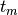
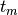
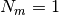

1.8. Decision Trees¶
Decision Trees (DTs) are a non-parametric supervised learning method used for classification and regression. The goal is to create a model that predicts the value of a target variable by learning simple decision rules inferred from the data features.
For instance, in the example below, decision trees learn from data to approximate a sine curve with a set of if-then-else decision rules. The deeper the tree, the more complex the decision rules and the fitter the model.
Some advantages of decision trees are:
- Simple to understand and to interpret. Trees can be visualised.
- Requires little data preparation. Other techniques often require data normalisation, dummy variables need to be created and blank values to be removed. Note however that this module does not support missing values.
- The cost of using the tree (i.e., predicting data) is logarithmic in the number of data points used to train the tree.
- Able to handle both numerical and categorical data. Other techniques are usually specialised in analysing datasets that have only one type of variable. See algorithms for more information.
- Able to handle multi-output problems.
- Uses a white box model. If a given situation is observable in a model, the explanation for the condition is easily explained by boolean logic. By contrast, in a black box model (e.g., in an artificial neural network), results may be more difficult to interpret.
- Possible to validate a model using statistical tests. That makes it possible to account for the reliability of the model.
- Performs well even if its assumptions are somewhat violated by the true model from which the data were generated.
The disadvantages of decision trees include:
- Decision-tree learners can create over-complex trees that do not generalise the data well. This is called overfitting. Mechanisms such as pruning (not currently supported), setting the minimum number of samples required at a leaf node or setting the maximum depth of the tree are necessary to avoid this problem.
- Decision trees can be unstable because small variations in the data might result in a completely different tree being generated. This problem is mitigated by using decision trees within an ensemble.
- The problem of learning an optimal decision tree is known to be NP-complete under several aspects of optimality and even for simple concepts. Consequently, practical decision-tree learning algorithms are based on heuristic algorithms such as the greedy algorithm where locally optimal decisions are made at each node. Such algorithms cannot guarantee to return the globally optimal decision tree. This can be mitigated by training multiple trees in an ensemble learner, where the features and samples are randomly sampled with replacement.
- There are concepts that are hard to learn because decision trees do not express them easily, such as XOR, parity or multiplexer problems.
- Decision tree learners create biased trees if some classes dominate. It is therefore recommended to balance the dataset prior to fitting with the decision tree.
1.8.1. Classification¶
DecisionTreeClassifier is a class capable of performing multi-class classification on a dataset.
As other classifiers, DecisionTreeClassifier take as input two arrays: an array X of size [n_samples, n_features] holding the training samples, and an array Y of integer values, size [n_samples], holding the class labels for the training samples:
>>> from sklearn import tree
>>> X = [[0, 0], [1, 1]]
>>> Y = [0, 1]
>>> clf = tree.DecisionTreeClassifier()
>>> clf = clf.fit(X, Y)
After being fitted, the model can then be used to predict new values:
>>> clf.predict([[2., 2.]])
array([1])
DecisionTreeClassifier is capable of both binary (where the labels are [-1, 1]) classification and multiclass (where the labels are [0, ..., K-1]) classification.
Using the Iris dataset, we can construct a tree as follows:
>>> from sklearn.datasets import load_iris
>>> from sklearn import tree
>>> iris = load_iris()
>>> clf = tree.DecisionTreeClassifier()
>>> clf = clf.fit(iris.data, iris.target)
Once trained, we can export the tree in Graphviz format using the export_graphviz exporter. Below is an example export of a tree trained on the entire iris dataset:
>>> from sklearn.externals.six import StringIO
>>> with open("iris.dot", 'w') as f:
... f = tree.export_graphviz(clf, out_file=f)
Then we can use Graphviz’s dot tool to create a PDF file (or any other supported file type): dot -Tpdf iris.dot -o iris.pdf.
>>> import os
>>> os.unlink('iris.dot')
Alternatively, if we have Python module pydot installed, we can generate a PDF file (or any other supported file type) directly in Python:
>>> from sklearn.externals.six import StringIO
>>> import pydot
>>> dot_data = StringIO()
>>> tree.export_graphviz(clf, out_file=dot_data)
>>> graph = pydot.graph_from_dot_data(dot_data.getvalue())
>>> graph.write_pdf("iris.pdf")
After being fitted, the model can then be used to predict new values:
>>> clf.predict(iris.data[0, :])
array([0])

1.8.2. Regression¶
Decision trees can also be applied to regression problems, using the DecisionTreeRegressor class.
As in the classification setting, the fit method will take as argument arrays X and y, only that in this case y is expected to have floating point values instead of integer values:
>>> from sklearn import tree
>>> X = [[0, 0], [2, 2]]
>>> y = [0.5, 2.5]
>>> clf = tree.DecisionTreeRegressor()
>>> clf = clf.fit(X, y)
>>> clf.predict([[1, 1]])
array([ 0.5])
Examples:
1.8.3. Multi-output problems¶
A multi-output problem is a supervised learning problem with several outputs to predict, that is when Y is a 2d array of size [n_samples, n_outputs].
When there is no correlation between the outputs, a very simple way to solve this kind of problem is to build n independent models, i.e. one for each output, and then to use those models to independently predict each one of the n outputs. However, because it is likely that the output values related to the same input are themselves correlated, an often better way is to build a single model capable of predicting simultaneously all n outputs. First, it requires lower training time since only a single estimator is built. Second, the generalization accuracy of the resulting estimator may often be increased.
With regard to decision trees, this strategy can readily be used to support multi-output problems. This requires the following changes:
- Store n output values in leaves, instead of 1;
- Use splitting criteria that compute the average reduction across all n outputs.
This module offers support for multi-output problems by implementing this strategy in both DecisionTreeClassifier and DecisionTreeRegressor. If a decision tree is fit on an output array Y of size [n_samples, n_outputs] then the resulting estimator will:
- Output n_output values upon predict;
- Output a list of n_output arrays of class probabilities upon predict_proba.
The use of multi-output trees for regression is demonstrated in Multi-output Decision Tree Regression. In this example, the input X is a single real value and the outputs Y are the sine and cosine of X.
The use of multi-output trees for classification is demonstrated in Face completion with a multi-output estimators. In this example, the inputs X are the pixels of the upper half of faces and the outputs Y are the pixels of the lower half of those faces.
References:
- M. Dumont et al, Fast multi-class image annotation with random subwindows and multiple output randomized trees, International Conference on Computer Vision Theory and Applications 2009
1.8.4. Complexity¶
In general, the run time cost to construct a balanced binary tree is and query time . Although the tree construction algorithm attempts to generate balanced trees, they will not always be balanced. Assuming that the subtrees remain approximately balanced, the cost at each node consists of searching through to find the feature that offers the largest reduction in entropy. This has a cost of at each node, leading to a total cost over the entire trees (by summing the cost at each node) of .
Scikit-learn offers a more efficient implementation for the construction of decision trees. A naive implementation (as above) would recompute the class label histograms (for classification) or the means (for regression) at for each new split point along a given feature. By presorting the feature over all relevant samples, and retaining a running label count, we reduce the complexity at each node to , which results in a total cost of .
1.8.5. Tips on practical use¶
- Decision trees tend to overfit on data with a large number of features. Getting the right ratio of samples to number of features is important, since a tree with few samples in high dimensional space is very likely to overfit.
- Consider performing dimensionality reduction (PCA, ICA, or Feature selection) beforehand to give your tree a better chance of finding features that are discriminative.
- Visualise your tree as you are training by using the export function. Use max_depth=3 as an initial tree depth to get a feel for how the tree is fitting to your data, and then increase the depth.
- Remember that the number of samples required to populate the tree doubles for each additional level the tree grows to. Use max_depth to control the size of the tree to prevent overfitting.
- Use min_samples_split or min_samples_leaf to control the number of samples at a leaf node. A very small number will usually mean the tree will overfit, whereas a large number will prevent the tree from learning the data. Try min_samples_leaf=5 as an initial value. The main difference between the two is that min_samples_leaf guarantees a minimum number of samples in a leaf, while min_samples_split can create arbitrary small leaves, though min_samples_split is more common in the literature.
- Balance your dataset before training to prevent the tree from creating a tree biased toward the classes that are dominant.
- All decision trees use np.float32 arrays internally. If training data is not in this format, a copy of the dataset will be made.
1.8.6. Tree algorithms: ID3, C4.5, C5.0 and CART¶
What are all the various decision tree algorithms and how do they differ from each other? Which one is implemented in scikit-learn?
ID3 (Iterative Dichotomiser 3) was developed in 1986 by Ross Quinlan. The algorithm creates a multiway tree, finding for each node (i.e. in a greedy manner) the categorical feature that will yield the largest information gain for categorical targets. Trees are grown to their maximum size and then a pruning step is usually applied to improve the ability of the tree to generalise to unseen data.
C4.5 is the successor to ID3 and removed the restriction that features must be categorical by dynamically defining a discrete attribute (based on numerical variables) that partitions the continuous attribute value into a discrete set of intervals. C4.5 converts the trained trees (i.e. the output of the ID3 algorithm) into sets of if-then rules. These accuracy of each rule is then evaluated to determine the order in which they should be applied. Pruning is done by removing a rule’s precondition if the accuracy of the rule improves without it.
C5.0 is Quinlan’s latest version release under a proprietary license. It uses less memory and builds smaller rulesets than C4.5 while being more accurate.
CART (Classification and Regression Trees) is very similar to C4.5, but it differs in that it supports numerical target variables (regression) and does not compute rule sets. CART constructs binary trees using the feature and threshold that yield the largest information gain at each node.
scikit-learn uses an optimised version of the CART algorithm.
1.8.7. Mathematical formulation¶
Given training vectors , i=1,..., l and a label vector , a decision tree recursively partitions the space such that the samples with the same labels are grouped together.
Let the data at node  be represented by
be represented by  . For
each candidate split consisting of a
feature
. For
each candidate split consisting of a
feature  and threshold , partition the data into
and subsets
and threshold , partition the data into
and subsets

The impurity at is computed using an impurity function
, the choice of which depends on the task being solved
(classification or regression)

Select the parameters that minimises the impurity
Recurse for subsets and until the maximum allowable depth is reached, or .
1.8.7.1. Classification criteria¶
If a target is a classification outcome taking on values 0,1,...,K-1,
for node , representing a region with
observations, let
be the proportion of class k observations in node
Common measures of impurity are Gini
Cross-Entropy
and Misclassification
1.8.7.2. Regression criteria¶
If the target is a continuous value, then for node ,
representing a region with observations, a common
criterion to minimise is the Mean Squared Error
References:
- http://en.wikipedia.org/wiki/Decision_tree_learning
- http://en.wikipedia.org/wiki/Predictive_analytics
- L. Breiman, J. Friedman, R. Olshen, and C. Stone. Classification and Regression Trees. Wadsworth, Belmont, CA, 1984.
- J.R. Quinlan. C4. 5: programs for machine learning. Morgan Kaufmann, 1993.
- T. Hastie, R. Tibshirani and J. Friedman. Elements of Statistical Learning, Springer, 2009.